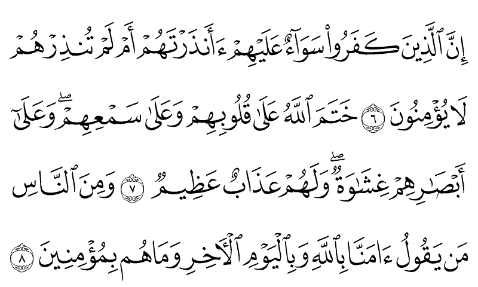
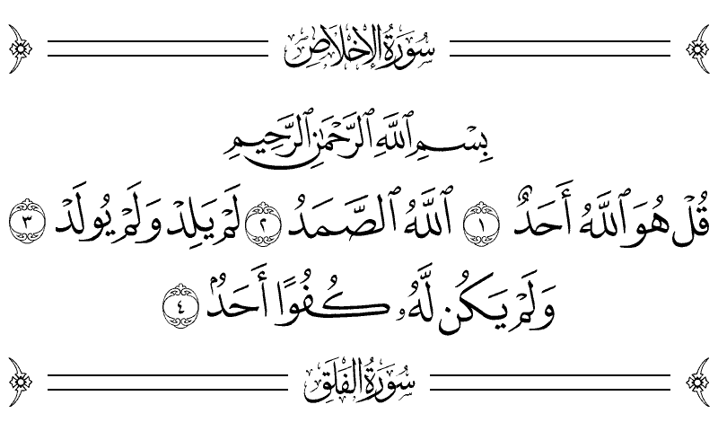
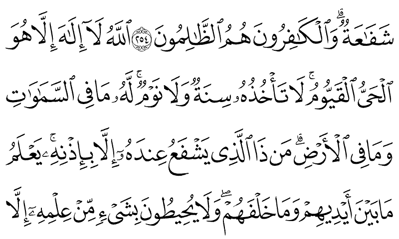
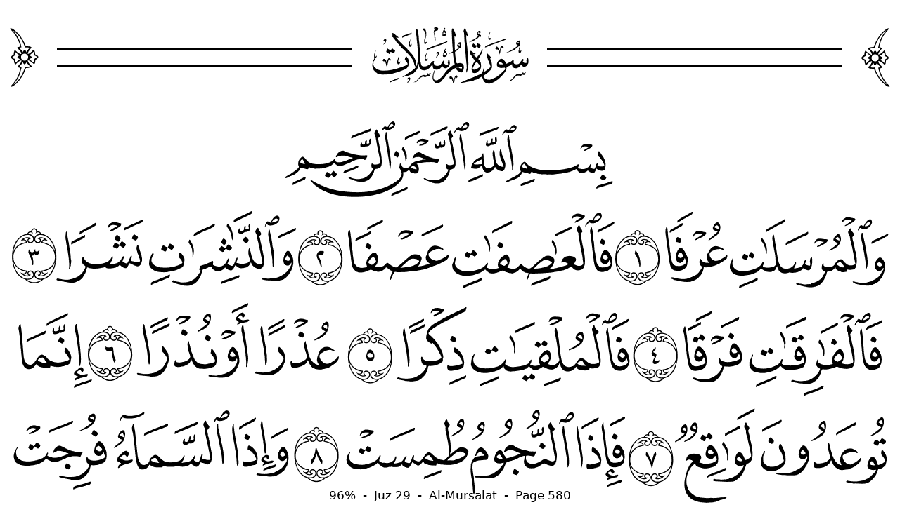
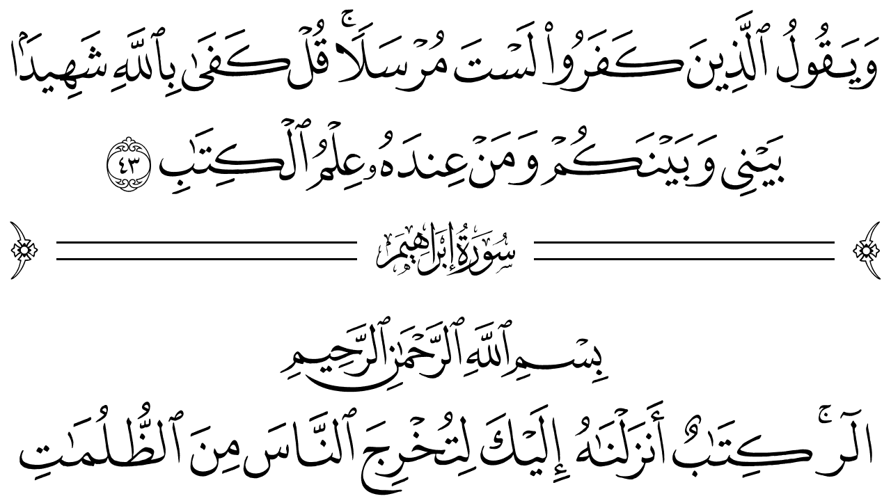
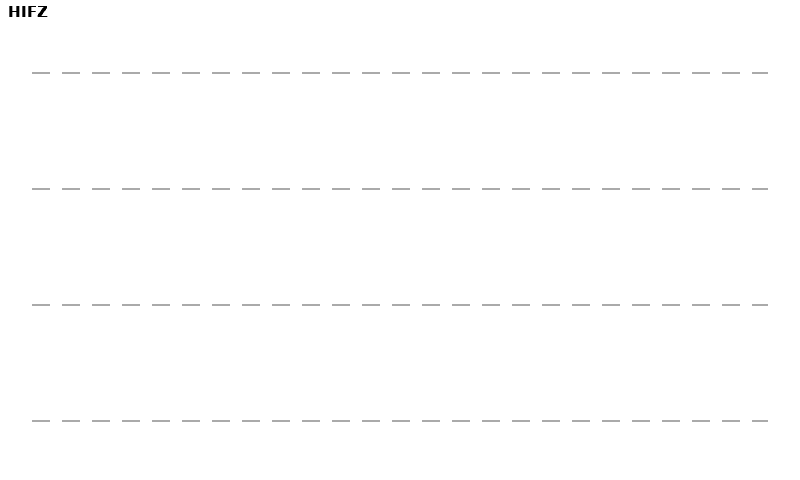

A small e-ink device that shows the authentic Madani
mushaf in the King Fahd Complex script, full tashkeel, surah ornaments
and all. It always opens exactly where you stopped. No internet, no apps, no
notifications. No clock, even. And a battery you charge every few
weeks, not every night.
604 mushaf pages77,429 words, every one authentic0 apps0 notificationsbattery measured in weeks
Why a device
Phones make reading fragile. This makes it inevitable.
This is for reading the Quran any moment, anywhere:
the train, the bus, a boarding queue. Carry it the way people carry
a paperback. One book in your pocket, no distractions beside it, and
it always opens exactly where you left off, on a paper-like screen
that reads beautifully in sunlight.
9:41
23 new notificationsTap to catch up on everything
Trending nowEveryone is talking about…
Don’t lose your streak!Come back and play
On a phone, everything else is one tap away
vs
One book. Nothing else on it to open.
01
The real mushaf
Per-page King Fahd Complex glyphs, the same letterforms as the
printed Madani mushaf, never a generic Arabic font. Line breaks,
surah bands, and ayah marks exactly where they belong.
02
Instant resume
Your place is stored as surah and ayah, never a page number, so
it survives every firmware update and every setting change.
03
Made for e-ink
Quiet partial refreshes while you read, one clean full refresh
at the right rhythm. Designed against real panel behavior from the
first line of code.
04
Truly offline
No radio, no account, no telemetry. Updates arrive over a USB
cable, on your terms, from this site.
Reading, the way the page was designed
Three, four, or five mushaf lines per view, each laid out by the
mushaf's own layout data and scaled to fill the screen edge to
edge. A quiet progress line tells you where you are:
13% · Juz 5 · An-Nisa.
Jump to any surah, ayah, juz, or page in a few presses
Bookmarks that cycle with a single button
Surah headers drawn with the mushaf's own ornament art

Just you and the page
No badges, no pings, no feed underneath. A calm e-ink page that
reads like paper and holds only the mushaf. Open it, read, close
it. The device never asks for your attention back.

Two editions of the Madani mushaf
The King Fahd Complex printed two great cuts of this mushaf:
the 1405H edition and the 1421H edition. This device carries both.
Switch in the menu and the same ayah reappears in the other
edition's own page layout, because your place is stored as an
ayah, not a page.


The whole interface while you read: one quiet line at the
bottom. How far you are, which juz, which surah, which page.Hardware with a point of view
No internet. No apps. Weeks of battery.
Everything a phone does to earn your attention, this
device is physically incapable of. That is not a software promise
that an update could quietly break. It is what the hardware is.
100% offline
Nothing to connect, nothing to sync, no account to sign in
to. Airplane mode is not a setting here, it is the whole
machine. Firmware updates happen over a USB-C cable, from this
site, only when you plug it in and choose to.
Zero apps
There is no store and nothing to install. The mushaf is not
an app on the device, it is the device. Nothing else can ever
appear on it, interrupt it, or sit one tap away from it.
Weeks per charge
E-ink draws power only when the page turns, and the device
sleeps between them. Read every day and charge it a couple of
times a month. Leave it in a bag for a week and it opens to
your ayah, exactly where you stopped.
The hardware
Five buttons. One job.
Four arrows on the front: left and right turn the page,
up enters hifz mode, down drives the drill. The power button sits on
the right edge where your thumb rests: press to jump anywhere, hold
for sleep. USB-C on the left edge is the only port: charging and
firmware updates, nothing else.
USB-C port for charging

Four buttons for navigation
Power button, also for sleep
Hifz mode
Hide the lines. Recite. Reveal.
One button hides the screen's lines behind quiet
dashes. Recite from memory, then reveal line by line to check
yourself, or restart the drill on a view you keep missing.
Your memorization state is saved on the device, expressed in
ayahs, portable across every future version.

hiderevealcheck
Updates
New firmware, no network
The device never touches the internet. That is the
whole point. Updating takes a USB-C cable and a browser.
Plug inConnect the device to any computer
with the USB-C cable.
Open the flash pageIn Chrome or Edge, visit
the flash page on this site.
Click installYour reading position, bookmarks,
and hifz state are untouched. They live on their own storage, by
design.
Follow the build
Hardware prototyping is underway. The waitlist opens when the first
enclosure closes.